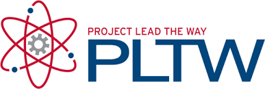

Our Computer Science Curriculum
Our Computer Science program uses two industry-recognized curricula to give students the strongest possible foundation — Project Lead The Way (PLTW) for our CS courses and Cyber.org for our Cybersecurity courses.
Project Lead The Way (PLTW) — Computer Science Courses
Our Computer Science Essentials (CSE), Computer Science Principles (CSP), and Computer Science Applications (CSA) courses follow the PLTW curriculum.
- PLTW is a nonprofit organization that provides STEM curriculum and training for US elementary, middle, and high schools, focusing on project-based learning to engage students in real-world challenges and develop critical thinking skills.
- The PLTW program engages students in activities, projects, and problem-based (APPB) learning that helps them understand how the knowledge and skills they develop in the classroom may be applied in everyday life.
- PLTW emphasizes hands-on, project-based learning where students apply their knowledge to solve real-world problems while developing critical thinking, problem-solving, and collaboration skills.
- PLTW provides extensive training and ongoing support for teachers to effectively implement the curriculum and facilitate project-based learning.
Through CSE, CSP, and CSA, students develop problem-solving skills, learn programming fundamentals, and gain exposure to a broad range of computer science concepts — from introductory coding all the way through data structures and algorithms.
Cyber.org — Cybersecurity Courses
Our Cybersecurity courses now follow the Cyber.org curriculum, a nationally recognized program designed to build a pipeline of skilled cybersecurity professionals starting at the high school level.
- Cyber.org is a nonprofit organization dedicated to empowering K–12 educators to teach cybersecurity through hands-on, standards-aligned curriculum and professional development.
- The curriculum covers foundational and advanced cybersecurity topics including networking, digital forensics, cryptography, ethical hacking, and cyber defense strategies.
- Students engage in lab-based activities and simulated real-world scenarios that mirror the challenges faced by professionals in the cybersecurity workforce.
- Cyber.org provides teachers with robust training, lesson plans, and ongoing resources so students receive a rigorous and up-to-date cybersecurity education.
- The program aligns with industry certifications and national cybersecurity frameworks, helping students build credentials and career readiness alongside their technical skills.
Through the Cyber.org curriculum, our Cybersecurity students are prepared for college-level study, industry certifications, and careers in one of the fastest-growing fields in technology.